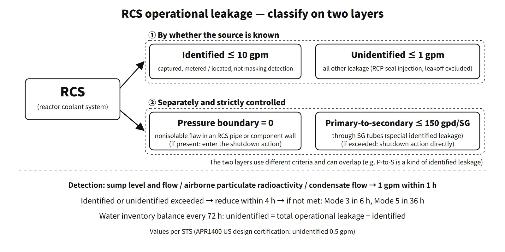

Operation, Regulation & Quality · C-OP-007
Reactor Coolant Leakage (Identified, Unidentified, Pressure Boundary) — Classified by Source, Flaw and Path, Managed by Limits and Detection
Same flow, different meaning: why leakage of unknown source and through-wall leakage are limited strictly, and how the limits, detection and LBB fit together.
RCS operational leakage is coolant escaping from the reactor coolant system, which the Technical Specifications classify — by whether its source is known and by the nature of the flaw — into identified leakage (collected and metered, or of known source, including primary-to-secondary leakage), unidentified leakage (all other leakage) and pressure boundary leakage (through a flaw in the wall of a pipe, vessel or component body), and limit by type. Pressure boundary leakage is not allowed.
RCP seal water injection and controlled bleed-off are design flows and are not counted as leakage under the Technical Specifications.
Principle and mechanism
Why separate the types?
The RCS cannot be built 100 % tight because of joints such as valve packing, pump seals and flanges, so some leakage is always present in operation. The issue is that the same 1 gpm means very different things depending on its source. Packing leakage is a maintenance item, but leakage from a crack through a pipe wall signals that primary water stress corrosion cracking (PWSCC) or boric acid corrosion is under way and could grow into a LOCA. So leakage of known source is collected and metered separately (identified), and leakage of unknown source is limited strictly, keeping open the possibility that it is pressure boundary leakage (unidentified).
Four categories (Technical Specifications 1.1 definitions, CE-type STS and APR1400 GTS structure)
The four categories are not mutually exclusive "destinations." Identified and unidentified depend on whether the source is known; pressure boundary on the nature of the flaw; primary-to-secondary on the path.
| Category | Definition | Typical path |
|---|---|---|
| Identified leakage | (1) leakage captured and conducted to collection systems, sumps or tanks (2) leakage into the containment atmosphere whose location is known and that does not interfere with leakage detection or is known not to be pressure boundary leakage (3) primary-to-secondary leakage | Valve packing leak-off lines, reactor drain tank |
| Unidentified leakage | All leakage that is not identified leakage (excluding RCP seal injection and controlled bleed-off) | Leakage of unknown source to the containment atmosphere or sump |
| Pressure boundary leakage | (Excluding primary-to-secondary) leakage through a nonisolable flaw in an RCS component body, pipe wall or vessel wall | Through-wall crack at a weld, crack at a CEDM penetration |
| Primary-to-secondary leakage | Leakage through the SG tubes to the secondary side; a special form of identified leakage | Cracking or wear of SG tubes |
Seal, packing and gasket leakage is not pressure boundary leakage even when it comes from a pressure-boundary component. Conversely, wall-flaw leakage cannot be reclassified as identified leakage even if its location is known.
Unidentified leakage comes from a water inventory balance
Unidentified leakage cannot be measured directly, so it is obtained by subtraction from a water inventory balance.
- Total operational leakage = (makeup − letdown recovered − change in system inventory) ÷ time. The inventory change comes from pressurizer and volume control tank levels with temperature correction.
- Identified leakage = increase in the collection tanks ÷ time
- Unidentified leakage = total operational leakage − identified leakage
Swings in temperature or level increase the density-correction error, so the balance is performed every 72 hours, not until 12 hours after steady state is established (SR).
![Left: photo of a generic PWR primary system above four definition cards for pressure boundary, unidentified, identified and primary-to-secondary leakage. Right: a log-scale leak-rate axis from 0.01 to 100 gpm with operating limits (pressure boundary zero, primary-to-secondary 150 gpd per SG or about 0.104 gpm, unidentified 1.0 gpm in the STS and 0.5 gpm in the US APR1400 design certification, identified 10 gpm), RG 1.45 Rev. 1 detection (quantify 0.05 gpm, respond to 1 gpm within 1 hour) and an LBB example (detection 0.5 to 5 gpm, 1 to 10 gpm)](../../assets/images/concepts/c-op-007-rcs-leakage/fig1-leakage-log-ladder.webp)
What it means in a plant — limits and actions
STS LCO 3.4.13 "RCS Operational Leakage" (NUREG-1431 and 1432)
| Item | Limit | Basis (Bases) |
|---|---|---|
| Pressure boundary leakage | None | Indicates material degradation; leakage aggravates degradation |
| Unidentified leakage | 1 gpm (3.8 L/min) | Smallest amount detectable in a reasonable time by containment air radioactivity and sump monitoring |
| Identified leakage | 10 gpm (37.8 L/min) | Does not mask detection of unidentified leakage and is within the charging capacity |
| Primary-to-secondary | 150 gpd per SG (0.39 L/min ≈ 0.10 gpm) | NEI 97-06 operational leakage performance criterion |
- Applicability: Modes 1–4. Modes 5 and 6 are not limited because pressure is low.
- Action A: if exceeded for reasons other than pressure boundary or primary-to-secondary leakage, reduce to within limits within 4 hours (including finding the source and reclassifying it as identified).
- Action B: if A is not met, or pressure boundary leakage exists, or primary-to-secondary leakage is exceeded, be in Mode 3 within 6 hours and Mode 5 within 36 hours. Both times count from entry into Condition B (not 42 hours combined). Pressure boundary leakage and exceeded primary-to-secondary leakage get no 4-hour reduction opportunity.
- Surveillance: water inventory balance every 72 hours; verification of primary-to-secondary leakage ≤ 150 gpd every 72 hours.
APR1400 — a design-specific example
- US DC GTS Rev. 2 (2018) LCO 3.4.12: no pressure boundary leakage, unidentified 0.5 gpm (1.89 L/min), identified 10 gpm, 150 gpd per SG. The action and surveillance structure is the same as the STS. The 0.5 gpm reflects the LBB analysis relying on a detection capability of 0.5 gpm in 1 h. The 150 gpd is a total primary-to-secondary 0.2 gpm divided between two SGs; the accident analysis assumes a total of 0.6 gpm as the initial condition.
Plant-specific Technical Specifications can therefore differ from the STS values; when quoting a limit, name the edition (for example, STS 1 gpm vs APR1400 US DC 0.5 gpm unidentified).
Leakage detection — RG 1.45
| Item | Rev. 0 (1973) | Rev. 1 (2008, applies to new plants) |
|---|---|---|
| Number of methods | At least three different methods | At least two independent, diverse methods in the Technical Specifications |
| Main methods | Sump level and flow, airborne particulate radioactivity, condensate flow or airborne gaseous radioactivity | Sump level and flow, airborne particulate radioactivity, air cooler condensate flow |
| Sensitivity and response | 1 gpm within 1 hour | Response time ≤ 1 hour for 1 gpm (excluding transport delay); quantify ≥ 0.05 gpm |
| Seismic | Particulate radioactivity and sump monitoring remain functional | At least one functional after an earthquake not requiring shutdown |
| Supplementary | Humidity, temperature, pressure (indirect) | Gaseous radioactivity, humidity, temperature, pressure, acoustic emission, video monitoring |
After the Davis-Besse (2002) reactor head boric acid corrosion, Rev. 1 stresses trending of low-level leakage and graded response procedures. Gaseous radioactivity was dropped from the methods cited in the Technical Specifications because better fuel integrity has slowed its response. APR1400 DC LCO 3.4.14 requires one each of the containment sump level, airborne particulate radioactivity and containment air humidity monitors. Primary-to-secondary leakage is watched separately by main steam line N-16 monitors, condenser air ejector exhaust monitors and blowdown samples.
Linking leakage and LBB
Leak-before-break (LBB) demonstrates that a pipe shows detectable leakage before it breaks, so that the dynamic effects of the break can be excluded from design. SRP 3.6.3 expects the leak rate from the leakage-size crack to be at least 10 times the detection capability. With a detection capability of 1 gpm the leakage-size crack is based on 10 gpm; with 0.5 gpm, on 5 gpm. The operational leakage LCO and the leakage detection LCO keep this assumption true during operation.
Regulatory and design criteria
The criteria below are US examples (NRC regulations, guides, Standard Technical Specifications and industry Technical Specifications Task Force changes).
| Basis | Key point |
|---|---|
| 10 CFR 50 App. A GDC 14 and 30 | Extremely low probability of abnormal leakage of the RCPB; means of detecting leakage and identifying its location |
| RG 1.45 Rev. 0 (1973) and Rev. 1 (2008) | Detection methods, sensitivity, response time, response procedures |
| SRP 5.2.5, 3.6.3 | Review of leakage detection; LBB margins (10 times leak rate, 2 times crack size) |
| NUREG-1431 and 1432, 3.4.13 and 3.4.15 | Operational leakage and leakage detection instrumentation LCOs |
| TSTF-449 (2005) | 150 gpd per SG primary-to-secondary framework |
| TSTF-554 Rev. 1 (approved 2020.12) | Removed "nonisolable" from the pressure boundary leakage definition; added a 4-hour isolation action |
How it has changed: many operating plants were licensed against RG 1.45 Rev. 0. Primary-to-secondary limits moved from the older standard's "1 gpm total, 500 gpd per SG" family to TSTF-449's 150 gpd per SG. TSTF-554 then refined the definition of and actions for pressure boundary leakage.
Easily confused pairs
| Operational leakage (LCO 3.4.13) | Pressure isolation valve (PIV) leakage | SGTR, LOCA | |
|---|---|---|---|
| Subject | Coolant escaping from the RCS | Seat leakage through valves at high-/low-pressure system interfaces | Breaks beyond the charging capacity |
| Management | Limits by type; reduce in 4 h → shut down in 6/36 h | Allowable leak rate per valve | Emergency operating procedures, safety analysis |
| Related | This note | (ISLOCA) |
If normal charging can make it up, it is leakage; if pressurizer level and pressure keep falling beyond that, it is handled as an accident.
Key points at a glance
- Identified leakage: captured and metered pump seal and valve packing leakage; located atmospheric leakage that does not interfere with detection; primary-to-secondary leakage.
- Unidentified leakage: all leakage that is not identified (excluding RCP seal injection and controlled bleed-off).
- Pressure boundary leakage: through a nonisolable flaw in a component body, pipe or vessel wall (excluding primary-to-secondary); not allowed.
- Limits (STS): unidentified 1 gpm, identified 10 gpm, 150 gpd per SG / APR1400 US DC unidentified 0.5 gpm.
- Actions: identified or unidentified exceeded → reduce within limits in 4 h; if not met, or pressure boundary or primary-to-secondary exceeded → from entry, Mode 3 in 6 h and Mode 5 in 36 h.
- Surveillance: water inventory balance every 72 h (total − identified = unidentified).
- Detection (RG 1.45): sump level and flow, airborne particulate radioactivity, condensate flow → 1 gpm within 1 h; Rev. 1 quantifies 0.05 gpm.
- Meaning: GDC 14 and 30; assures in operation the 10-times leak-rate margin of LBB.
